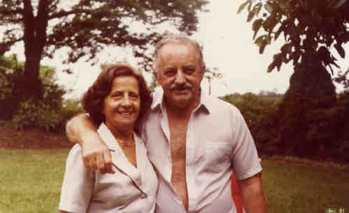
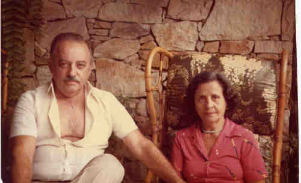

 Antonia Nagle (1918-1991) |
Antonia Nagle
 • fotos: orlando_antonia. Antonia casad[:o::a] Orlando Facci, filho de Nicola Facci e Ermínia Petrella. (Orlando Facci nasceu em em 20 Out 1917 e faleceu em 12 Set 1989.) |
 Antonia Nagle (1918-1991) |
Antonia Nagle
 • fotos: orlando_antonia. Antonia casad[:o::a] Orlando Facci, filho de Nicola Facci e Ermínia Petrella. (Orlando Facci nasceu em em 20 Out 1917 e faleceu em 12 Set 1989.) |
Início | Sumário | Sobrenomes | Lista de Nomes
Este Local de Rede foi Criado 1 Nov 2005 com Legacy 6.0 de Millennia
 Eventos notáveis em Sua vida foram:
Eventos notáveis em Sua vida foram: